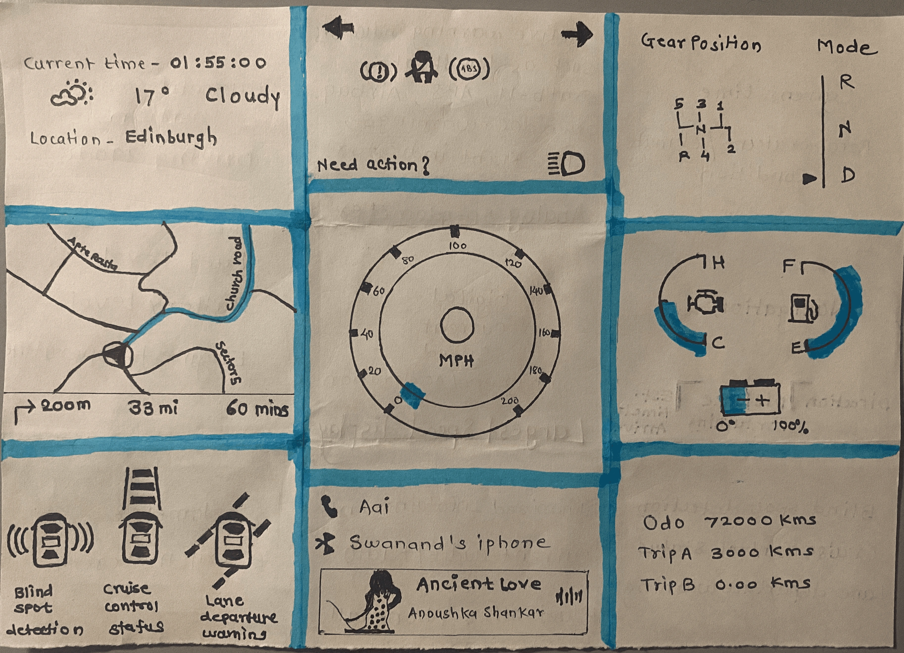

Automotive
car dashboard.
Dashboard design
and evaluation.
Objective
Reduce information overload by establishing a clear visual hierarchy between critical alerts, driving information and secondary features. Use driver research to define the required controls, then apply Gestalt principles to develop dashboard layouts for different driving conditions.
Solution
I designed and evaluated an interactive dashboard built on a consistent information framework. Proximity and similarity connect related controls, while scale, contrast, colour and spacing communicate priority. The layout supports scenario-specific information without disrupting its core structure. Participant feedback guided refinements to navigation, vehicle status and trip information.
Dashboard history
and initial research.
The historical review examined dashboard layouts, information density and established conventions to inform the proposed interface.
Preliminary participants
Preliminary user research.
Surveys and interviews examined dashboard use, commonly used alerts, lighting conditions and reported difficulties. The findings informed the choice of controls and information, followed by layout exploration.

Before the automobile
Protective carriage dashboard.
The historical review begins with the protective dashboard of a horse-drawn carriage, shown in the original research drawing.
Why review dashboard history?
The review helped identify familiar information patterns and how additional features increased display density. This informed the decision to retain recognisable groups for navigation, driving information and vehicle status.
Paper prototypes
and layout exploration.
Paper prototypes applied Gestalt grouping and visual hierarchy to the information layout. The transition shows how this structure developed into the digital dashboard.

Dashboard information
architecture.
The prototype groups navigation, driving information, vehicle status and warnings into four defined areas.

Speed and primary driving information.
Speed occupies the centre of the display and uses the largest numerical readout. Gear and supporting driving information are grouped around the speedometer.
Prototype evaluation.
Two-screen evaluation setup.
One screen presented driving scenarios and the other showed the dashboard prototype. Seven participants from engineering, design, technology and education evaluated the design.
Structured interviews and the System Usability Scale (SUS) examined the prototype. A separate two-person recall task assessed which information participants remembered.
Evaluation methods and study scope
Structured interviews
The 39-question assessment explored information interpretation, feature clarity and moments of confusion. Dynamic prototype visuals accompanied verbal Highway, Navigation, Low Visibility and Multiple Alerts scenarios.
System Usability Scale (SUS)
Seven participants completed the standard ten-item questionnaire after evaluating the prototype. It measured perceived usability; the original scores are presented in the Results section.
Information recall
Two participants viewed the dashboard for 15 seconds, then wrote down the information they remembered. Recorded times describe written recall completion, rather than alert-recognition speed.
Think-aloud observations
Participants were encouraged to verbalise their thoughts and reactions during interaction. No formal dataset was collected for this activity.
Participant groups and limitations
Twenty people contributed to the preliminary surveys and interviews. Three returning evaluators later reviewed the revised design. These are activity counts, rather than a total of unique participants.
The two-screen setup did not reproduce physical driving demands, environmental conditions, fatigue or long-term familiarity.
Prototype recordings
by driving scenario.
The recordings show the original prototype during start-up, highway driving, navigation and low-visibility conditions.
Start-up sequence.
The start-up recording shows the instrument display becoming active, with the speed readout at zero.
Evaluation feedback
and revisions.
These summaries are paraphrased from the original scenario-evaluation responses.
Route visibility
Participants requested a broader navigation path and clearer traffic information.
Fuel and temperature indicators
Participants requested clearer visualisation and reference markings for fuel and engine temperature.
Trip information
Feedback questioned how unused trips should appear alongside the odometer and suggested showing trip details when selected.


Latest build:
Pre-drive dashboard.
A later visual iteration developed after the original prototype evaluation.

Readiness warnings
Brake and seat-belt warnings occupy the upper signal area.
Door and tyre status
Door and tyre-pressure labels sit beside the vehicle diagram.
Parked vehicle status
Zero speed, neutral and engine-off status describe the stationary vehicle.
Usability results.
SUS measured perceived usability of the original prototype. Three returning participants later reviewed the revised design.
Mean from seven responses, rounded to one decimal.
What the evaluation supports
The seven SUS scores were 75, 60, 65, 62.5, 70, 80 and 87.5. Their mean is 71.4 to one decimal. The report presents 71.42. Follow-up feedback came from three returning evaluators, rather than a second seven-person SUS study.
What needs further validation
Glance behaviour, response times, workload, fatigue and long-term familiarity need more controlled evaluation. Adaptive alert placement also raises a question about predictability and learned locations.
Design constraints and trade-offs
Facilitated scenarios provided an early evaluation method within the project’s time constraints. Selective changes preserved the core layout. Personalisation was proposed within that stable framework; production feasibility and standards compliance require specialist assessment.
Evaluation scope
The score relates to the original prototype and does not establish improvements in driving performance. No SUS result is reported here for the latest build.
Motor Studio
Motor Studio brings this dashboard concept into an interactive driving experience.
Try the driving experience